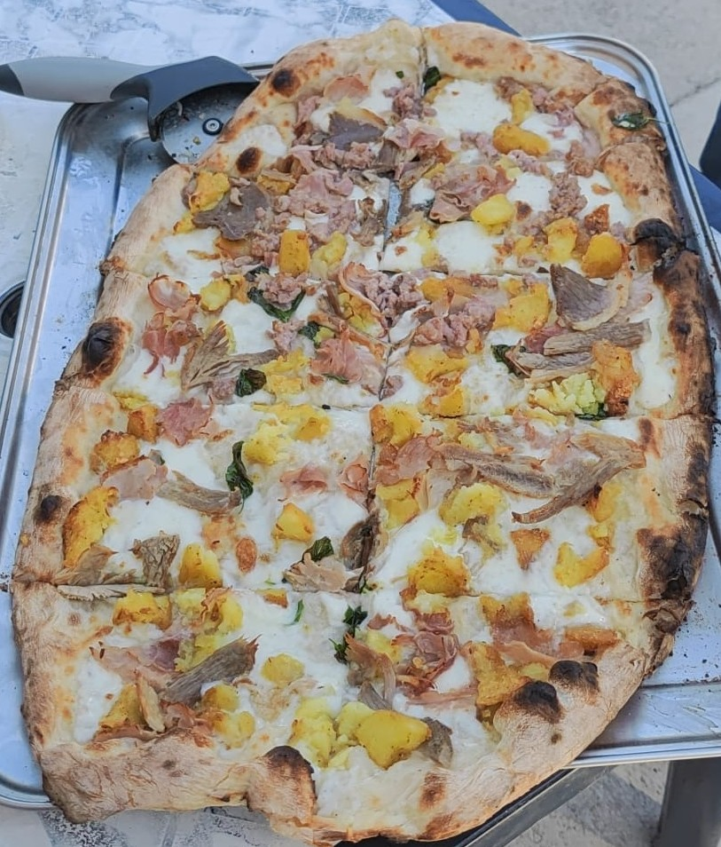
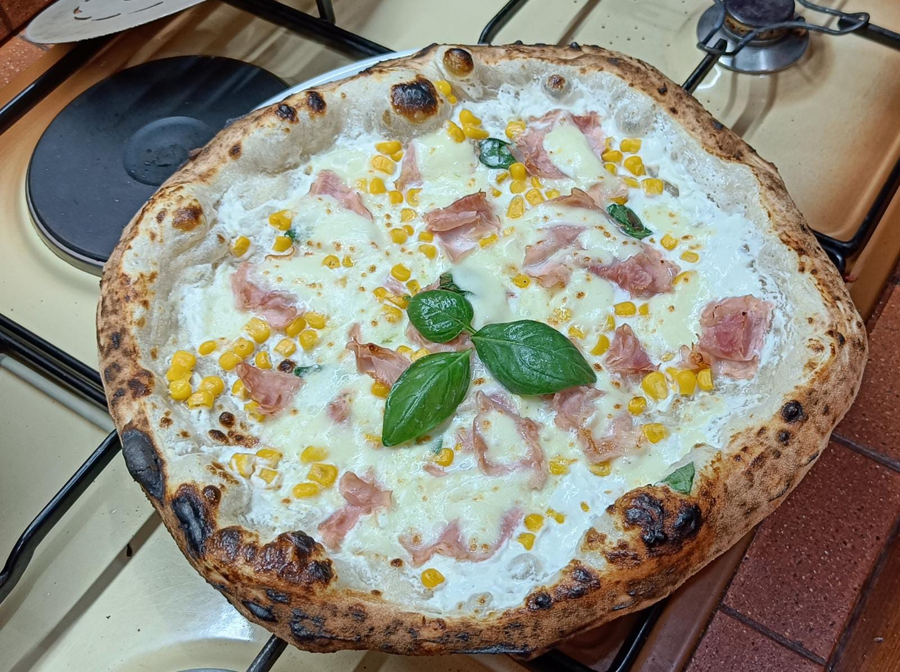
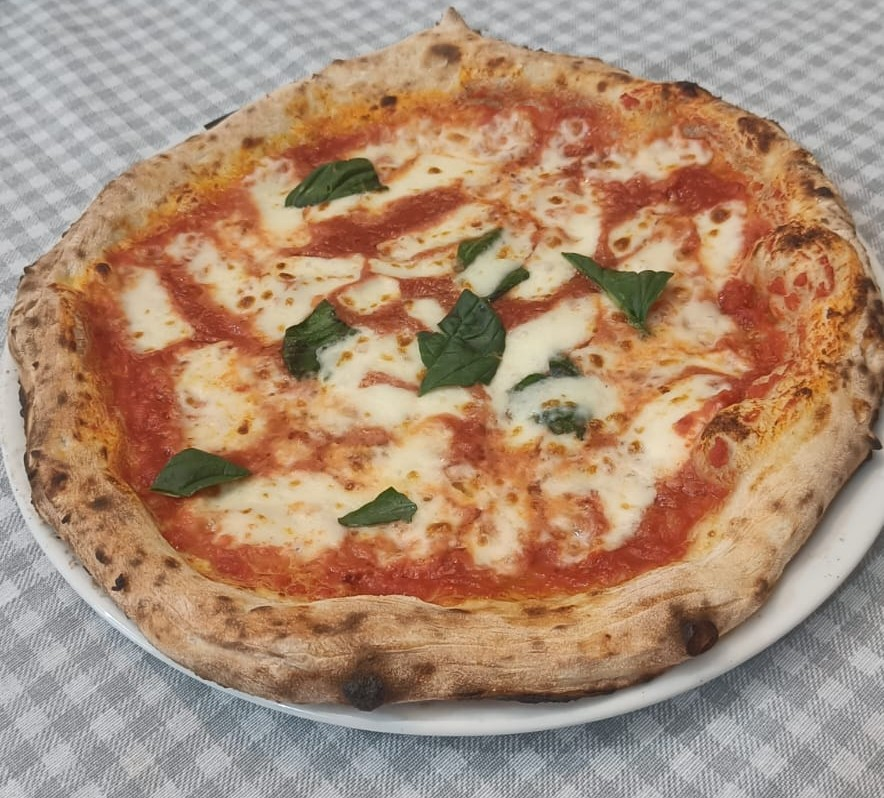

Pizzeria dei Campioni d'Italia
"Dove la pancia piena incontra la tasca vuota"
Le Nostre Pizze
LA TRADIZIONALE GRAGNANESE
L'Autentica Pizza Gragnanese: il cuore della Campania in ogni morso, con la selezione dei migliori ingredienti.
-

Capricciosa
Prosciutto cotto, pomodoro San Marzano DOP, funghi chiodini di *Zi Peppin*, fior di latte di Agerola, olio evo, basilico.
Un classico intramontabile, con un tocco autentico.
-

3P
Porchetta originale di Ariccia, Provola dei monti lattari, patate al forno, olio evo, basilico.
Per i veri amanti della golosità, un'esplosione di sapori!
-

Biancaneve
Fior di latte di Agerola, prosciutto cotto di Parma, mais, olio evo, basilico.
Per i piccoli buongustai: una delizia morbida e colorata!
LA VIOLENTEMENTE VERACE NAPOLETANA
Ogni singolo morso ti porta nei più nascosti vicoli di FORCELLA.
-

Margherita
Pomodoro San Marzano DOP, fior di latte di Agerola, olio EVO, basilico.
La tradizione che diventa innovazione, la semplicità che si trasforma in poesia.
-

Don Antonio
Pomodoro San Marzano DOP, aglio, origano, olio EVO. All'uscita: acciughe del *Cantabrico*.
Un tributo al sapore intenso del mare, per veri intenditori.
-

Donna Annamaria
Vellutata di zucchine, fior di latte di Agerola, olio evo, basilico. All'uscita: chips di zucchine fritte.
Un viaggio di sapori in costiera amalfitana, salite sulla giostra di Donna Annamaria.
-

Donna Sofia
Pomodorino giallo della Piana del Sele, fior di latte di Agerola, lardo di colonnata IGP, scaglie di provolone del monaco, olio evo, basilico.
Lasciati sedurre dalla Donna Sofia, una pizza che celebra l'eleganza e il sapore.